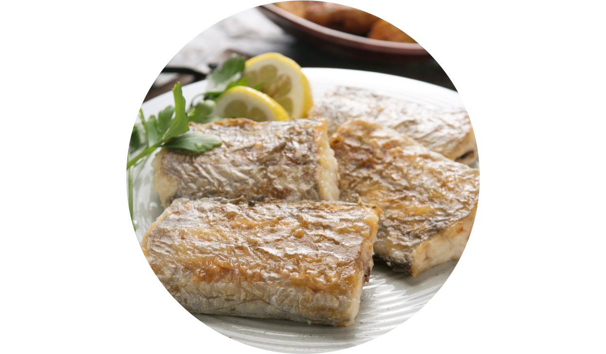
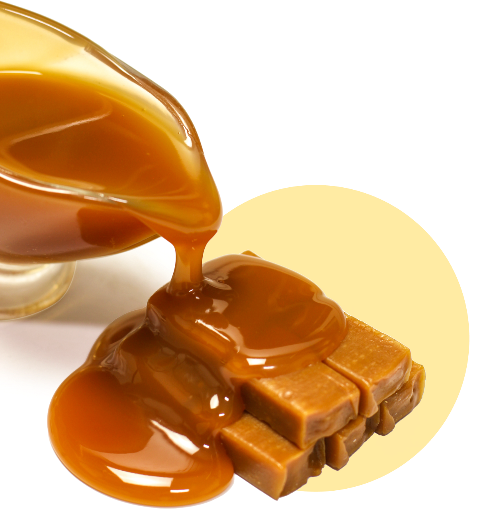
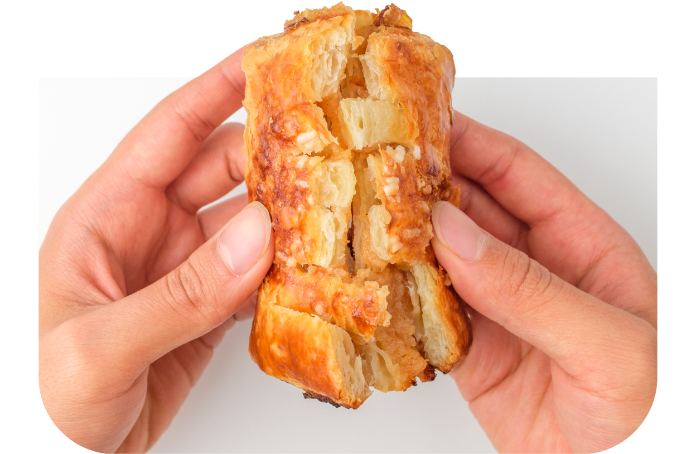
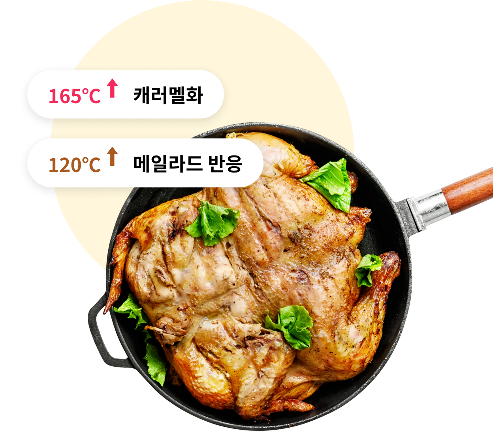
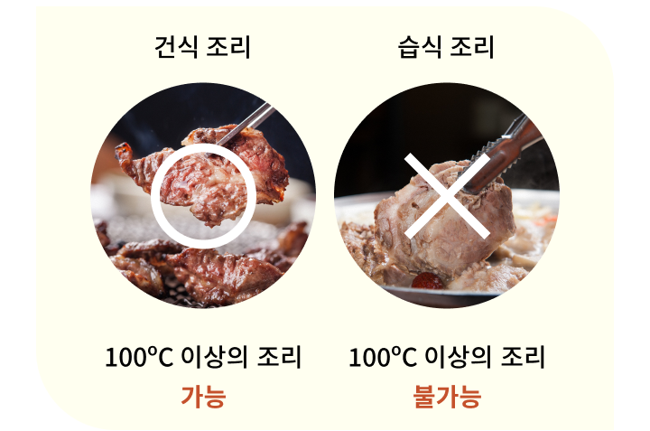

주방광파오븐


보다 더 스마트한 일상
LG ThinQ의 시작

보다 더 스마트한 일상, LG ThinQ
씽큐는 사람과 가전을 AI 기술로 연결하여 더 편리하고 놀라운 일상을 만드는 LG전자의 스마트 홈 플랫폼입니다.
* 본 콘텐츠는 ThinQ 앱의 콘텐츠입니다.
조리한 음식은 왜 맛있을까요?
불에 살짝 익힌 스테이크, 바삭한 생선 껍질, 먹음직스러운 냄새를 풍기는 빵 껍질 그리고 구운 견과류와 향신료. 음식은 조리를 통해 맛과 냄새가 풍부해지기 때문이죠.

캐러멜화
가장 단순한 갈변 반응은 당의 캐러멜화 때문이죠. 기본적으로 거의 자당 분자인 식탁용 설탕은 가열하면 먼저 걸쭉한 시럽으로 녹았다가 차츰 가벼운 노란색에서 짙은 갈색으로 변해요. 그와 동시에 처음에는 달기만 하고 향이 없었던 풍미에 신맛, 약간의 쓴맛이 생기고 향이 풍부해지죠. 여러 가지 화학반응이 이러한 변화에 개입하며 수백 가지 반응 산물을 생성하게 돼요. 신맛의 유기산, 단맛 또는 쓴맛의 파생물, 수많은 휘발성 향 분자, 갈색의 고분자가 거기에 포함된 답니다.

메일라드 반응
빵의 크러스트, 초콜릿, 커피콩, 흑맥주, 오븐에서 구운 고깃덩이 등 기본적으로 설탕이 아닌 모든 음식물의 최종적 색깔과 풍미에 영향을 주는 반응으로, 1910년경 이 반응을 밝혀낸 프랑스의 물리학자 루이 카미유 메일라드의 이름을 따서 메일라드 반응이라고 불러요.
연쇄적으로 일어나는 메일라드 반응은 탄수화물 분자와 아미노산의 반응으로부터 시작되죠. 이때 불안정한 중간 구조가 형성되어 갈색으로의 변색과 충만하고 강렬한 풍미가 나오게 돼요.
메일라드 반응의 풍미는 캐러멜화에 의한 풍미보다 복합적이며 고기 향이 나는데, 아미노산이 탄소, 수소, 산소 혼합물에 질소와 황원자를 더해 새로운 분자 가족과 새로운 향 차원을 생성하기 때문이죠.

고온과 마른 조리법
캐러멜화와 메일라드 반응은 비교적 높은 온도에서만 빠른 속도로 진행돼요. 식탁용 설탕의 캐러멜화는 165℃, 메일라드 반응은 120℃ 정도에서 갈변이 눈에 띄기 시작해요.

캐러멜화, 메일라드 갈변 반응 조건
처음 분자들 간의 반응을 강제하기 위해서는 다량의 에너지가 필요해요. 이 때문에 현실적으로 갈변 반응은 대부분의 음식에서 건식 조리가 이루어질 때 바깥쪽에서만 일어나요. 물은 100℃를 넘을 수 없기 때문에, 뜨거운 물에 넣고 조리하거나 찌는 음식물과 고기와 채소의 물기가 많은 내부는 100℃를 넘지 못해요.
그러나 기름이나 오븐에서 조리하는 음식물의 바깥 표면은 급속히 물기가 사라져 159~260℃에 이르는 주변 온도에 도달하므로, 같은 재료라도 보일링, 브레이징, 포칭 같은 습식 조리를 한 음식은 일반적으로 그릴링, 베이킹, 프라잉 등 건식 조리를 했을 때보다 맛이 순하고 색깔이 허옇게 되지요.

조리하면 음식이 왜 맛있어지는지 이유를 알아두면 더 좋겠죠?


LG ThinQ
ThinQ 하나로 더 좋아지는 일상
일상을 더 편하고 스마트하게 만들어주는 씽큐 앱을 지금 바로 만나보세요.
- #음식
- #요리
- #갈변
- #풍미
- #갈변반응
- #음식풍미
- #조리음식
- #캐러멜화
- #메일라드반응
- #마른조리법
출처 및 고지사항
[에코에너지기술연구소] 청소기 클리닝 ATLAS 개발 보고서 (2022.08)